Friendly tip: This article contains many GIF demo animations. On mobile, please try to read in a Wi-Fi environment.
Foreword: Debugging skills are an indispensable skill in any technology research and development. Mastering various debugging techniques is bound to achieve twice the result with half the effort. For example, quickly locating problems, reducing failure probability, helping analyze logic errors, and so on. Today, as front-end development on the Internet becomes increasingly important, how to reduce development costs and improve work efficiency in front-end development makes mastering front-end development debugging skills especially important.
This article will explain various front-end JS debugging techniques one by one. Perhaps you are already proficient, so let’s review them together. Perhaps there are methods you haven’t seen, so why not learn together. Perhaps you don’t yet know how to debug, so seize this opportunity to fill the gap.
1. Veteran-level debugging master: Alert
That was an era when the Internet was just getting started. Front-end web pages were mainly used for content display, and browser scripts could only provide very simple auxiliary functions for pages. At that time, web pages mainly ran on browsers dominated by IE6, and JS debugging capabilities were very weak. Debugging could only be done through the alert method built into the Window object. At that time, it probably looked like this:
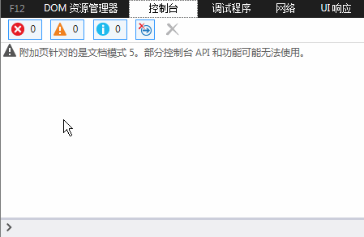
It should be noted that the effect seen here is not what was seen in IE browsers back then, but the effect in a higher version of IE. In addition, there didn’t seem to be such an advanced console at that time, and alert was used in real page JS code. Although the alert debugging method is primitive, it truly had indelible value at the time, and even today it still has a place.
2. New-generation debugging king: Console
As JS can do more and more in the Web front-end, its responsibilities grow larger, and its status becomes increasingly important. The traditional alert debugging method has gradually been unable to meet various front-end development scenarios. Moreover, the debugging information popped up by alert is in a quite unattractive window and blocks part of the page content, making it somewhat unfriendly.
On the other hand, alert debugging messages require adding statements like "alert(xxxxx)" to the program logic in order to work normally, and alert also blocks the continued rendering of the page. This means that after debugging, developers must manually remove these debug codes, which is rather troublesome.
Therefore, a new generation of browsers, including Firefox, Chrome, and IE, successively launched JS debugging consoles, supporting forms like "console.log(xxxx)" to print debugging information on the console without directly affecting page display. Taking IE as an example, it looks like this:
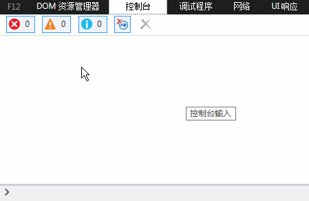
Well, goodbye to the ugly alert popup. And the rising stars led by Chrome browser expanded richer features for Console:
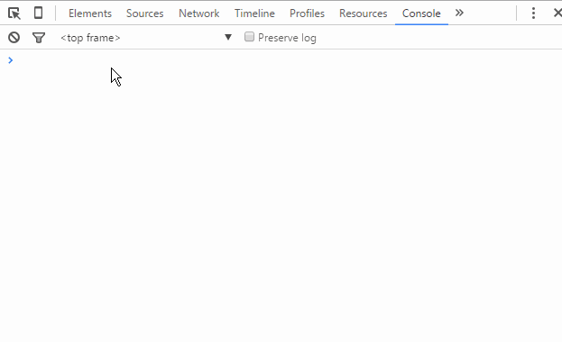
Do you think this is satisfying enough? The imagination of the Chrome development team is truly admirable:
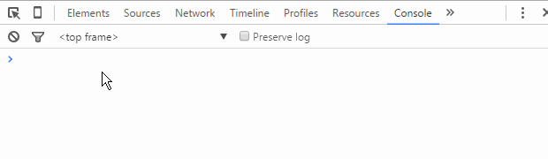
Okay, I’ve gone off on a bit of a tangent. In short, the emergence of the console and the browser’s built-in Console object has brought great convenience to front-end development debugging.
Some may ask: doesn’t this kind of debug code also need to be cleaned up after debugging?
Regarding this issue, if you first perform an existence check before using the console object, then not deleting it will not break business logic. Of course, for the sake of code cleanliness, after debugging, you should still delete these debug codes unrelated to business logic as much as possible.
3. JS breakpoint debugging
Breakpoint: one of the debugger’s functions, it can interrupt the program where needed, making it convenient for analysis. You can also set breakpoints in one debugging session, and next time, simply let the program automatically run to the set breakpoint position, where it will stop at the previously set breakpoint. This greatly facilitates operation and saves time. — Baidu Baike
JS breakpoint debugging means adding breakpoints to JS code in the browser developer tools, so that JS execution stops at a specific position, making it convenient for developers to analyze the code segment and handle the logic. In order to observe the effect of breakpoint debugging, we have prepared a piece of JS code in advance:
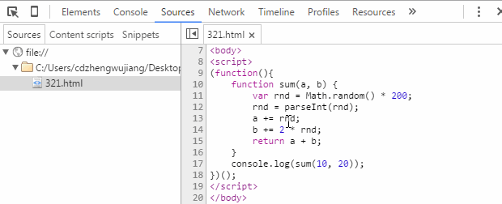
The code is very simple: define a function, pass in two numbers, add a random integer to each, and then return the sum of the two numbers. Taking Chrome developer tools as an example, let’s look at the basic method of JS breakpoint debugging.
3.1. Sources breakpoint
First, from the console output in the figure above, we can see that the test code should have run normally. But why "should"? Because a random number is added in the function. Is the final result really correct? This is a pointless guess, but suppose I now want to verify: the two numbers passed into the function, the random numbers added, and the final sum. So how do we do it?
Method 1, the most ordinary one mentioned earlier: whether using alert or console, we can verify like this:

From the figure above, we added three lines of console code to print the data variables we care about. Finally, from the output in the console (Console panel), we can clearly verify whether the entire calculation process is normal, thereby meeting the verification requirements of our problem statement.
Method 2: the obvious drawback of Method 1 is that it adds a lot of redundant code. Next, let’s see whether using breakpoints for verification is more convenient. First, let’s look at how to add a breakpoint and what the effect is after breaking:
As shown in the figure, the process of adding a breakpoint to a piece of code is: "F12 (Ctrl + Shift + I) to open developer tools" → "click the Sources menu" → "find the corresponding file in the left tree" → "click the line number column" to complete adding/removing a breakpoint on the current line. Once the breakpoint is added, refresh the page and JS execution will stop at the breakpoint. In the Sources interface, you will see all variables and values in the current scope. Just verify each value to complete the verification requirements of our problem statement.
Now the problem arises: careful readers will notice that when the code executes to the breakpoint, the displayed values of variables a and b have already undergone addition, and we cannot see the initial 10 and 20 passed when calling the sum function. So what do we do? We need to go back and first learn some basics of breakpoint debugging. After opening the Sources panel, we will actually see the following content. Let’s follow the mouse cursor and see what each part means:

From left to right, the functions represented by each icon are:
- Pause/Resume script execution: pause/resume script execution (the program stops when it reaches the next breakpoint).
- Step over next function call: execute the function call in the next step (jump to the next line).
- Step into next function call: enter the current function.
- Step out of current function: jump out of the currently executing function.
- Deactivate/Activate all breakpoints: disable/enable all breakpoints (without canceling them).
- Pause on exceptions: automatically set a breakpoint on exceptions.
At this point, the function keys of breakpoint debugging have been mostly introduced. Next, we can go through our program code line by line and view how each variable changes after each line executes, as shown in the figure below:
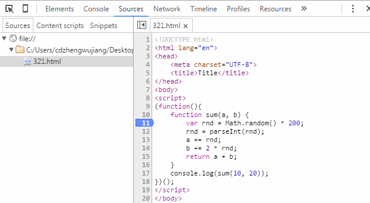
As above, we can see the entire process of variables a and b from their initial values, to adding random values in between, to finally calculating the sum and outputting the final result. Completing the verification requirements of the problem statement is more than easy.
For the remaining function keys, we slightly modify our test code and use a GIF image to demonstrate their usage:
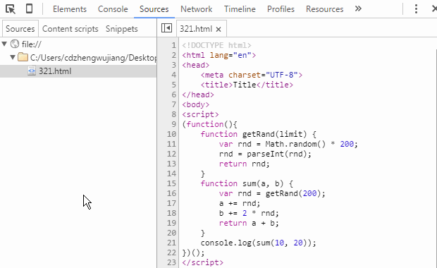
One thing to note here: the feature of directly printing variable values in the code area is a new feature added in newer versions of Chrome. If you are still using an older version of Chrome, you may not be able to directly view variable information at a breakpoint. In that case, you can move the mouse over the variable name and pause briefly to see the variable value. You can also select the variable name with the mouse, right-click, and choose "Add to watch" to view it in the Watch panel. This method also works for expressions. In addition, while at a breakpoint, you can switch to the Console panel, directly enter the variable name in the console, and press Enter to view variable information. This part is relatively simple. Considering the length of the article, I won’t provide figure demonstrations.
3.2. Debugger breakpoint
The so-called Debugger breakpoint is actually a name I gave it myself; I don’t know the professional term. Specifically, it means adding a "debugger;" statement to the code. When the code executes to this statement, it automatically breaks. The subsequent operations are almost exactly the same as adding a breakpoint in the Sources panel, with the only difference being that after debugging, you need to delete the statement.
Since apart from the different way of setting the breakpoint, its function and effect are the same as adding a breakpoint in the Sources panel, why does this method still exist? I think the reason is this: during development, we occasionally encounter situations where HTML fragments (including embedded JS code) are asynchronously loaded, and this part of the JS code cannot be found in the Sources tree, so we cannot directly add breakpoints in the developer tools. If we want to add a breakpoint to asynchronously loaded scripts, "debugger;" comes into play. Let’s look at its effect directly through a GIF image:
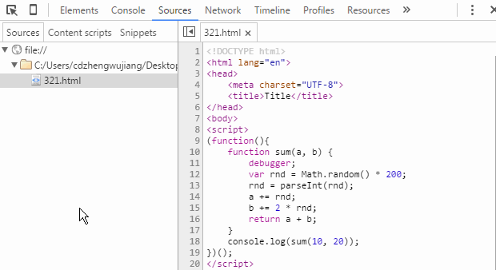
4. DOM breakpoint debugging
DOM breakpoints, as the name suggests, add breakpoints to DOM elements to achieve debugging purposes. In actual use, the effect of breakpoints ultimately lands within JS logic. Let’s look at the specific effect of each type of DOM breakpoint in turn.
4.1. Break when child nodes inside a node change (Break on subtree modifications)
As front-end development becomes increasingly complex, front-end JS code is growing and logic is getting more complex. A seemingly simple web page is usually accompanied by large chunks of JS code, involving many DOM node add, delete, and modify operations. Inevitably, there are situations where it is difficult to locate a piece of code directly through JS code, but we can quickly locate the relevant DOM node through the Elements panel of the developer tools. At this point, locating scripts through DOM breakpoints becomes especially important. Let's take a look via the gif demonstration:

The above figure demonstrates the effect of breakpoints triggered by adding, deleting, and swapping order operations on the ul's child nodes (li). Note that modifying the attributes or content of child nodes will not trigger breakpoints.
4.2. Break when node attributes change (Break on attributes modifications)
On the other hand, as the business logic handled by front-end becomes increasingly complex, the reliance on storing certain data becomes stronger. Storing temporary data in (custom) attributes of DOM nodes is the preferred choice for developers in many cases. Especially after the HTML5 standard enhanced support for custom attributes (e.g., dataset, data-*, etc.), the use of attribute settings has become more and more widespread. Therefore, Chrome Developer Tools also provides support for attribute change breakpoints, and the effect is roughly as follows:

This method also requires attention: any operation on the attributes of child nodes will not trigger the breakpoint on the node itself.
4.3. Break when the node is removed (Break on node removal)
This DOM breakpoint is very simple to set, and the trigger condition is clear: when the node is deleted. Therefore, this method is usually used when executing the `parentNode.removeChild(childNode)` statement. This method is not used much.
The debugging methods introduced above are basically the ones we frequently use in daily development. Used properly, they can handle almost all problems in our daily development. However, the developer tools also consider more scenarios and provide additional breakpoint methods, as shown in the figure:
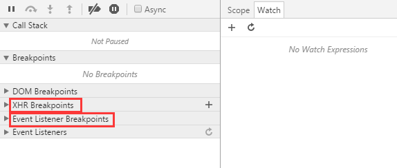
5、XHR Breakpoints
In recent years, front-end development has undergone dramatic changes—from being little-known at first to being extremely popular today. Ajax drives rich web applications, and mobile WebApp single-page applications are thriving. All of this is inseparable from the XMLHttpRequest object, and "XHR Breakpoints" is a breakpoint debugging feature designed specifically for asynchronous operations.
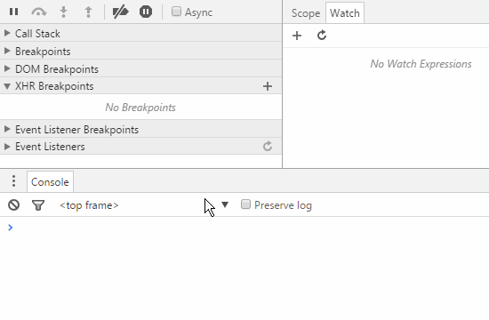
We can add breakpoint conditions for asynchronous breakpoints via the "+" button on the right side of "XHR Breakpoints". When the URL of an asynchronous request meets this condition, the JS logic will automatically trigger a breakpoint. The demo animation does not show the breakpoint location because the demo uses jQuery's encapsulated ajax method, and the code has been minified, so no obvious effect can be seen. In fact, the XHR breakpoint is triggered at the `xhr.send()` statement.
The power of XHR breakpoints lies in the ability to customize breakpoint rules, meaning we can set breakpoints for a batch of, a single, or even all asynchronous requests—very powerful. However, it seems that this feature is not used much in daily development, at least I don't use it much. There are probably two reasons: first, this type of breakpoint debugging need is rarely involved in daily business; second, front-end development at this stage is mostly based on JS frameworks. Even the most basic jQuery has already well encapsulated Ajax, and very few people encapsulate Ajax methods themselves. Moreover, to reduce code size, projects usually choose minified code libraries, making XHR breakpoint tracking relatively less easy.
6、Event Listener Breakpoints
Event listener breakpoints, i.e., setting breakpoints based on event names. When an event is triggered, the breakpoint stops at the location where the event is bound. Event listener breakpoints list all page and script events, including mouse, keyboard, animation, timers, XHR, etc. This greatly reduces the difficulty of debugging business logic related to events.
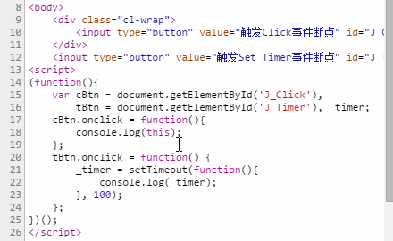
The demo example shows the breakpoint effects when the click event is triggered and when setTimeout is set. The example shows that after selecting the click event breakpoint, clicking both buttons triggered breakpoints, and when setTimeout is set, the "Set Timer" breakpoint is triggered.
Debugging is a very important part of project development. It not only helps us quickly locate problems, but also saves our development time. Mastering various debugging methods will surely bring many benefits to your career development. However, among so many debugging methods, choosing one suitable for your current application scenario requires experience and continuous trial and accumulation.
Author: Zheng Wujiang
Source: http://seejs.me/2016/03/27/jsdebugger/
Click me to share notes
<p style="font-size:14px;">The note must be an extension of the content of this article!</p><br> <p style="font-size:12px;"><a href="../tougao.html" target="_blank">To submit an article, click here</a></p> <p style="font-size:14px;"><a href="./runoob-user-test-intro.html" target="_blank">How to obtain a registration invitation code</a></p> <h3 class="text-muted"><i class="fa fa-info-circle" aria-hidden="true"></i> You must <a href=".." class="runoob-pop">log in</a> before sharing notes!</h3> <p><a href="./runoob-user-test-intro.html" target="_blank">How to obtain a registration invitation code</a></p>